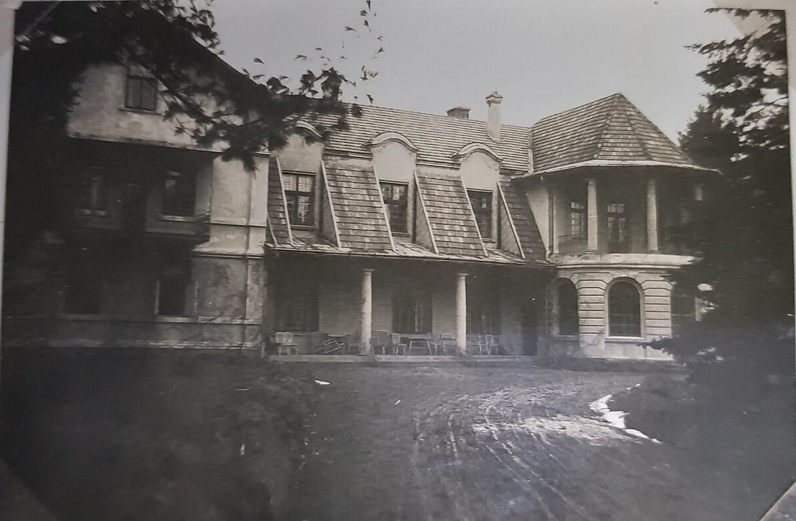

Mszana Dolna · 1899–1909 · historia nueva sacada de los libros de una parroquia vecina
El conde del número 1
En el número 1 de Mszana Dolna estaba la casa señorial. En el libro de bautismos dejó cinco largas inscripciones con los títulos «comes» y «principissa».
Traducido del original polaco con la ayuda de Claude. Las citas de los libros las doy en el original, con su traducción.
En los libros de la parroquia vecina de Mszana Dolna, casi todos los padres de los niños bautizados son «agricola», campesinos, y sus casas tienen números de dos o tres cifras. En el número 1 es distinto. Allí estaba la casa señorial. En enero de 1899 las fincas de Mszana Dolna, Glisne y Słomka, que antes pertenecían a Władysław Szujski, pasaron a Maria, de soltera Łęski, y a su marido, el conde Henryk Krasiński.
Cinco bautismos
El 27 de noviembre de 1899 el párroco, el padre Wincenty Jankowski, bautizó a una niña nacida cuatro días antes. La inscripción es más larga que las demás, porque cada uno de los padres tiene tres nombres, y el sacerdote lo señaló con esmero con la palabra «trinom.», de tres nombres.
Del libro de bautismos de Mszana Dolna, 27 de noviembre de 1899, casa n.º 1
Maria Antonina (binom.) · Petrus Sigismundus Henricus (trinom.) comes Krasiński · Maria Stanislava Gertrudis (trinom.) Łęska filia Hilarii et Mariae natae principissa Drucka Lubecka
Maria Antonina, de dos nombres. Padre: Piotr Zygmunt Henryk, de tres nombres, conde Krasiński. Madre: Maria Stanisława Gertruda, de tres nombres, de soltera Łęski, hija de Hilary y de Maria, de soltera princesa Drucki-Lubecki.
Mszana Dolna, copias anuales de los libros de bautismos 1890–1900 · sign. 2582/3500, año 1899 · escaneo 004 · ver el escaneo ↗
En la última columna el sacerdote añadió tres fechas: «c. 5/10 897; p. 29/8 866; m. 27/11 877». Hacía lo mismo con los hijos de los campesinos: la primera es el día de la boda de los padres; las dos siguientes, las fechas de nacimiento del padre y de la madre. Aquí se puede comprobar, porque a los Krasiński los describen los genealogistas. La boda se celebró el 5 de octubre de 1897 en Vilna, exactamente como lo anotó el sacerdote. La condesa nació un 27 de noviembre. El conde nació un día 29, aunque según las publicaciones en abril, no en agosto. Tenía 33 años. Así pues, la hija fue bautizada el día del cumpleaños de su madre.
Después vinieron más hijos, todos bautizados en Mszana y todos inscritos bajo el número 1:
| Bautismo | Hijo | Padrinos |
|---|---|---|
| 27 nov. 1899 | Maria Antonina | conde Konstanty Krasiński, Maria Łęski |
| 17 feb. 1901 | Franciszka Maria | conde Michał Tyszkiewicz, Maria Magdalena Łęski |
| 13 mar. 1902 | Henryk Hilary Antoni | Hilary Łęski, condesa Aleksandra Ledóchowski, de soltera Łęski |
| 13 sept. 1905 | Jan Kazimierz Maria | conde Hubert Antoni Krasiński, Adelajda Maria Łęski |
| 14 dic. 1909 | Marian Gerard Stanisław | conde Henryk Hilary Antoni Krasiński, condesa Maria Antonia Krasiński |
En los tres primeros bautismos los padrinos fueron parientes de ambas familias. Los dos últimos son distintos. En 1905 el padrino fue el conde Hubert Antoni Krasiński. Así se llamaba el abuelo del niño, pero este había muerto en 1890. Igual se llamaba el hijo mayor de los condes, que tenía entonces menos de siete años. En 1909 ya no hay duda: al hijo menor lo sacaron de pila sus propios hermanos, Henryk, de siete años, y Maria, de diez. El sacerdote los anotó con sus títulos, «comes» y «comitissa», y junto a la hermana añadió «virgo», doncella.
El niño bautizado en 1905 se hizo después benedictino y es conocido como el padre Cyryl Krasiński. Al mayor de los hermanos, Hubert, no se le encuentra en las copias de Mszana, aunque según una de las fuentes nació aquí en noviembre de 1898.
El bautismo de 1905 tiene en el libro un aspecto distinto de los demás. No lleva número ni está en fila con los otros. Alguien lo metió con letra menuda en el encabezado impreso de la página, por encima de la primera línea. Parece que se añadió más tarde, cuando en la página ya no quedaba sitio libre.
Desde cuándo en Mszana
En algunas publicaciones se puede leer que Henryk Krasiński se estableció en Mszana Dolna solo después de la Primera Guerra Mundial, cuando perdió sus fincas en Ucrania. El libro de bautismos dice otra cosa. Desde noviembre de 1899 sus hijos nacían en el número 1 y los bautizaba el párroco del lugar. La lista de propietarios de fincas de 1902 menciona en Mszana Dolna, Glisne y Słomka al doctor Henryk y a Maria Krasiński.
La casa señorial que aún hoy se alza en el parque de Mszana la construyeron ya ellos. Según una de las publicaciones, estaba terminada en 1905. El conde murió en Mszana Dolna el 20 de septiembre de 1928.

Las parteras
En los bautismos de los hijos de campesinos de Mszana Dolna, en la columna de la partera figura en esos años casi siempre Wiktoria Średniawski. A la casa señorial acudían otras. Las dos primeras hijas las recibió Julia Bojanowski. Solo con el hijo, en 1902, aparece anotada Wiktoria Średniawski. Para el último parto, en diciembre de 1909, se hizo venir a una partera de la ciudad: «Helena Bachowska e Cracovia», de Cracovia. De las parteras de aldea habla la historia «Parteras sin título».
La condesa en la pila de los campesinos
En el número 1 no vivía solo el conde. Entre 1890 y 1916 se registraron allí cincuenta bautismos, bodas y entierros. Son familias de personas que trabajaban en la casa señorial o que alquilaban vivienda en sus edificios: un adjunto, un escribiente a jornal, un oficinista del juzgado, un empleado de correos. Muchos apellidos no suenan a montañeses: Dubový, Kunzig, Reichl, Schaffer. En 1904 se bautizó allí a una hija del evangélico Jerzy Kunz y de Elżbieta, de soltera Bischoff.
Los Krasiński fueron a veces padrinos de los hijos de sus vecinos del número 1. El 11 de septiembre de 1904 la condesa sacó de pila a Maria Wiktoria, hija de Józef Smoła. El otro padrino fue Franciszek Łabuz, y a la condesa el sacerdote la anotó así: «Maria Krasińska ux. Henrici Comitissa», esposa de Henryk, condesa.
En abril de 1906 y en noviembre de 1908 el conde y la condesa fueron padrinos de hijos de Ignacy Żarowski, que también vivía en el número 1. La primera vez, el sacerdote, que escribió el resto de la inscripción en latín, anotó a los padrinos en polaco: «Piotr Zygmunt Henryk hr. Krasiński, Maryja hr. Krasińska» («hr.»: conde, condesa).
También en la parroquia de Dobra los señores se ponían junto a la pila bautismal al lado de los campesinos. Lo cuentan las historias «Un conde en la pila bautismal» y «El mandatario de Dobra».
Grado de certeza
- SeguroLos cinco bautismos de los hijos de los Krasiński, con fechas, nombres y padrinos, y los bautismos de 1904 y 1906 en los que ellos fueron padrinos. Cotejé cada inscripción con el escaneo.
- ProbableQue las fechas junto a las abreviaturas «p.» y «m.» son las fechas de nacimiento del padre y de la madre del niño: en el caso de los Krasiński el día coincide con las publicaciones en ambos casos. El número de inscripciones bajo el número 1, contado a partir de las transcripciones. Que el padrino de 1905 fue el hermano del niño, de seis años. Las circunstancias de la adquisición de las fincas en 1899: las fuentes difieren sobre si las compró la condesa o su padre, Hilary Łęski.
- PosibleQue los demás habitantes del número 1 trabajaran en la casa señorial. El libro da sus oficios, pero no dice a quién servían.
- Por comprobarEl mes de nacimiento del conde (libro: agosto; publicaciones: abril) y el año de nacimiento de la condesa (libro: 1877; publicaciones: 1874). El apellido Żarowski (quizá Zarowski). El cuarto nombre del niño bautizado en 1905 es ilegible, y los nombres de los padrinos de 1909 los tapa en parte una hoja pegada.
Lo que no sabemos
- Dónde fue bautizado el hijo mayor, Hubert.
- Quién era Julia Bojanowski, que recibió a las dos primeras hijas.
- Cómo se inscribió el bautismo del hijo menor, nacido en 1914. Las copias anuales de bautismos terminan en 1911.
Fuentes
- Copias anuales de los libros de bautismos de la parroquia de Mszana Dolna en el sitio Metryki de la Sociedad Genealógica Polaca (PTG), fondo 2582; cada año tiene en el sitio una carpeta aparte. Bautismos 1890–1900 (sign. 3500): año 1899, escaneo 004. Bautismos 1901–1911 (sign. 3505): año 1901, escaneo 003; 1902, escaneo 003; 1904, escaneo 005; 1905, escaneo 005; 1906, escaneo 002; 1908, escaneo 009; 1909, escaneo 012.
- M. J. Minakowski, «Genealogia potomków Sejmu Wielkiego» (Genealogía de los descendientes del Gran Sejm): boda en Vilna el 5 de octubre de 1897, padres e hijos de los Krasiński.
- Wikipedia (en polaco): «Henryk Piotr Krasiński» (ahí, la frase sobre su establecimiento después de la Primera Guerra Mundial), «Cyryl Krasiński», «Mszana Dolna» (venta de las fincas según el diario «Czas» [El Tiempo] del 18 de enero de 1899).
- W. Chorązki, «Heraldyka miasta Mszana Dolna» (Heráldica de la ciudad de Mszana Dolna), 2020: adquisición de las fincas el 16 de enero de 1899 y construcción de la casa señorial.
- Lista de propietarios de fincas tabulares (inscritas en el registro territorial) de Galitzia, de 1902, sitio Genealogia Polaków (Genealogía de los polacos).